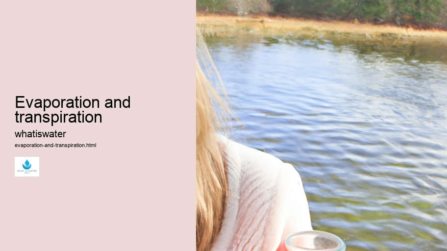

Hydrological Cycle
Hydrological Cycle
Evaporation and transpiration
Condensation and cloud formation
Precipitation and rain patterns
Surface runoff and river systems
Groundwater flow and aquifers
Snowmelt and glacial processes
Water storage in oceans lakes and reservoirs
Soil moisture and infiltration
Water balance and budgeting
Human impact on the hydrological cycle
Marine Ecosystems
Marine Ecosystems
Coral reefs and their biodiversity
Mangrove forests as coastal protectors
Ocean currents and climate regulation
Deepsea habitats and extremophiles
Intertidal zones and estuarine ecosystems
Marine food webs and trophic levels
Freshwater Ecosystems
Freshwater Ecosystems
Conservation efforts for marine species
Marine biogeochemical cycles
Impact of global warming on oceans
Water Resource Management
Water Resource Management
Rivers streams and creeks ecosystems
Lakes ponds wetlands habitats
Biodiversity in freshwater environments
Aquatic plants role in oxygenation
Freshwater fish species diversity
Invasive species impact on freshwater systems
Pollution threats to freshwater sources
Conservation strategies for freshwater biomes
Role of wetlands in flood control
Importance of riparian buffers
Cultural Significance of Water
Cultural Significance of Water
Sustainable water use practices
Desalination technologies for fresh water supply
Wastewater treatment processes
Rainwater harvesting techniques
Management of water during drought conditions
Transboundary water resource politics
Infrastructure for water distribution
Agricultural irrigation efficiency
Urban water demand management
Impact of climate change on water resources
About Us
Contact Us

Evaporation and transpiration
Wastewater Treatment
Evaporation and transpiration are two fundamental processes in the hydrologic cycle, intricately connected to the Earth's climate system and water balance. Evaporation pertains to the conversion of liquid water into vapor, primarily driven by solar energy.
Water Efficiency
It occurs not only from bodies of water like oceans, lakes, and rivers but also from soil surfaces.
Water Management
Transpiration, on the other hand, is a biological process where plants release water vapor through tiny openings in their leaves called stomata.
What distinguishes these two phenomena is their origin; evaporation is a physical process while transpiration is physiological.
Waterborne Diseases
Together, they contribute to atmospheric moisture and play a crucial role in weather patterns and climate dynamics. This combined effect of both processes is often referred to as evapotranspiration.
One might imagine evaporation as an invisible river ascending towards the sky. As water molecules absorb heat, they gain enough kinetic energy to break free from liquid bonds and become gaseous.
Water Sports and Recreation
Rivers and Lakes
The rate of evaporation depends on several factors including temperature, humidity, wind speed, and surface area.
Wastewater Treatment
Transpiration serves as a silent pulse within plant life - an essential mechanism for nutrient uptake and temperature regulation within vegetation. Through transpiration, plants replace water lost during photosynthesis and maintain internal fluid balance – this movement aids in drawing nutrients from the soil into plant roots.
The synergy between evaporation and transpiration has profound ecological implications.
Water in Culture and Religion
They influence our planet's hydrological cycle by replenishing clouds which eventually precipitate back onto land or sea.
Hydrology
This constant exchange helps regulate ecosystems' health – ensuring that life can thrive across diverse landscapes.
Moreover, understanding these processes enables us to forecast drought conditions or manage agricultural practices more efficiently by conserving water resources through irrigation strategies aligned with natural cycles.
In summing up their significance: without evaporation or transpiration cycling Earth's vital fluids continuously – vast swathes would likely turn arid; desiccating biodiversity’s lush tapestry woven across terrestrial realms into mere dusty threads devoid of verdant vigor or vibrant vitality.
Hydrological Cycle
Check our other pages :
Coral reefs and their biodiversity
Soil moisture and infiltration
Invasive species impact on freshwater systems
Hydrological Cycle
Frequently Asked Questions
What is the difference between evaporation and transpiration?
Evaporation refers to the process by which water changes from a liquid state to a gaseous state (vapor) due to an increase in temperature or pressure. It can occur on any surface where water is present. Transpiration, on the other hand, is a specific type of evaporation that occurs within plants. As plants absorb water from the soil, some of this water is lost into the atmosphere through tiny pores called stomata located on their leaves.
Why are evaporation and transpiration important in the water cycle?
Evaporation and transpiration are crucial components of the water cycle as they facilitate the movement of water from land and vegetation back into the atmosphere. This process helps to regulate climate by cooling surfaces (through evaporative cooling) and contributes to cloud formation when water vapor condenses at higher altitudes. Furthermore, transpiration is vital for plants as it aids in nutrient uptake from soil, cools plant leaves, and maintains plant turgor pressure.